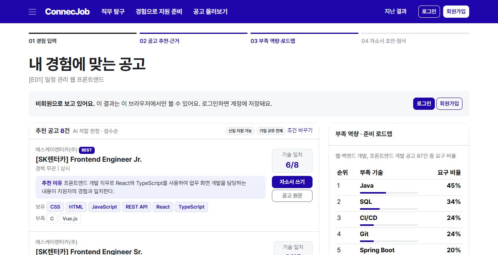
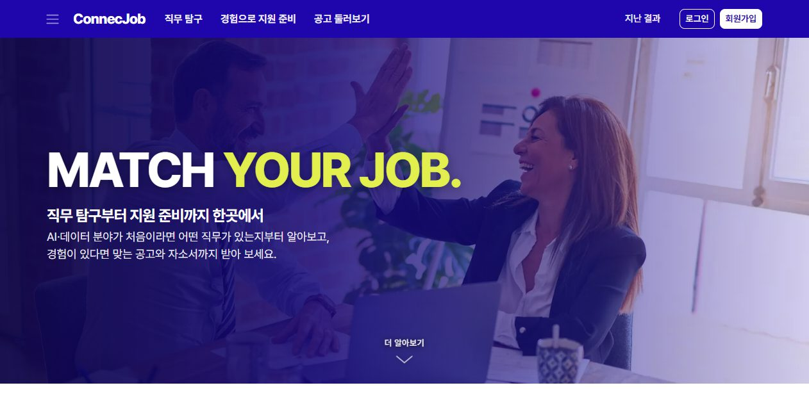
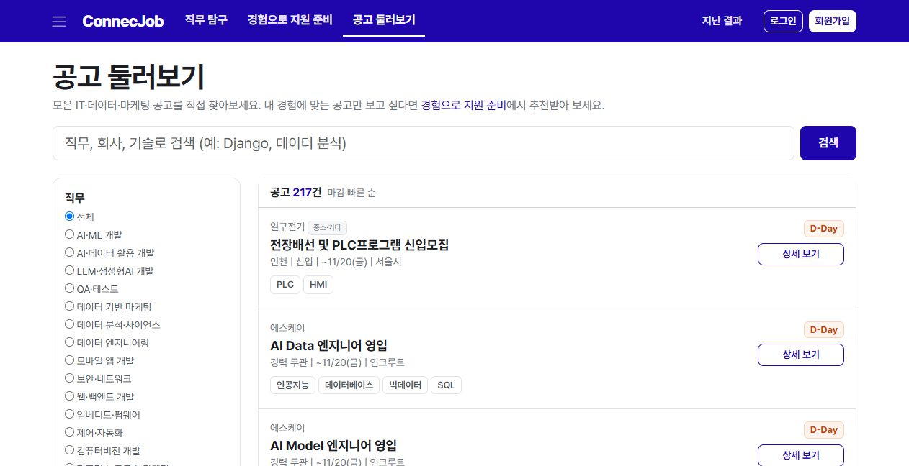
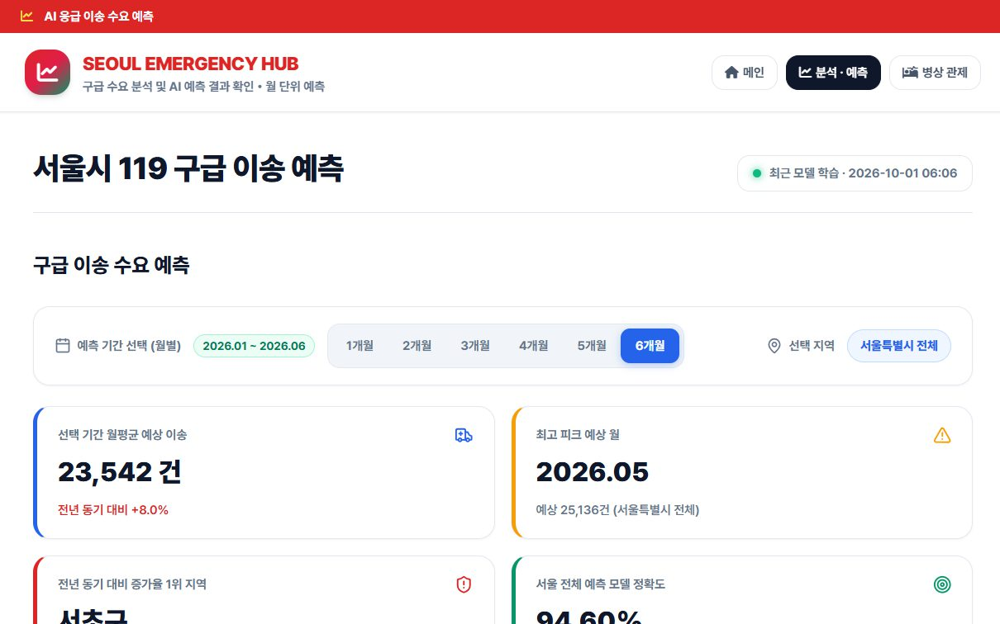
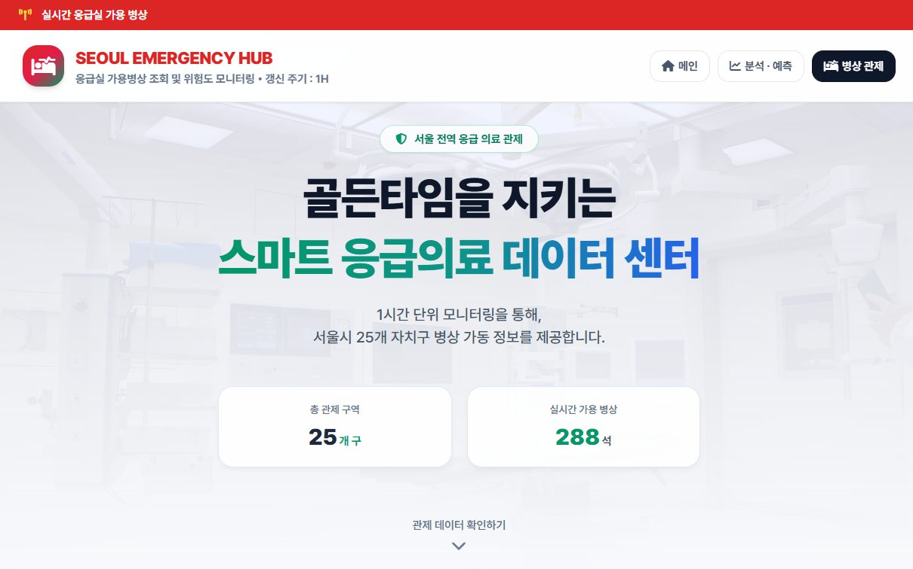
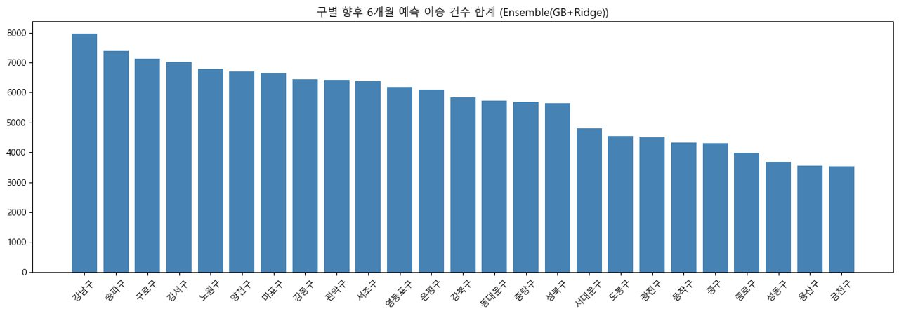
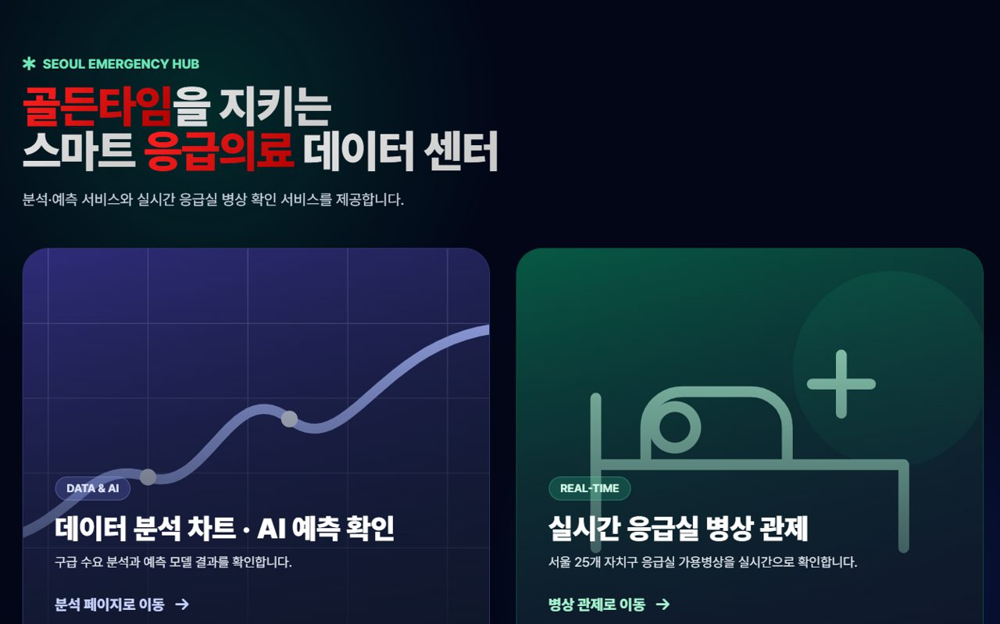

ABOUT ME
박채원
Pak Chewon
LLM · RAG · Data Preprocessing · Django
데이터 수집·전처리부터 RAG 추천, 웹 서비스 구현, AWS 배포까지 혼자 끝까지 만들어 봤습니다.
6만 건 공고를 통합한 ConnecJob에서 추천 적합률을 72%에서 94%로 높였습니다.
CONTACT
- pcw0127@naver.com
- GITHUB
- github.com/congcongee
EDUCATION
- 수료
- KDT 기업맞춤형 AI+X 융복합 인재 양성 과정MBC아카데미 · 2026.06–2026.11 (824시간)
- 학교
- 을지대학교 졸업 (2025.08)미용화장품과학과
EXPERIENCE
- 인턴
- YADAH(야다) 마케팅2024.07 · 인플루언서 캠페인 현황 관리, 콘텐츠 반응 데이터 정리
- 메이트
- 올리브영 N성수점2024.11–현재 · 오픈 멤버, 고객 문의 파악·공유
SKILLS & TOOLS
PYTHON · DATA
PythonpandasNumPyMatplotlib · Seabornrequests · BeautifulSoupSelenium공공 Open API
MACHINE LEARNING
scikit-learnEDA · 전처리회귀 · 분류 · 군집앙상블ProphetTF-IDF
DEEP LEARNING
TensorFlow · KerasDNN · CNNRNN · LSTMPyTorch
NLP · LLM · RAG
LangChainRAGOpenAI APIChromaHugging FaceOllama
WEB · BACKEND
DjangoFlaskHTML · CSS · JavaScriptBootstrapChart.js
DB · DEPLOY · COLLAB
AWS EC2Git · GitHubSQLiteMySQLOracleNotion
CERTIFICATES & EDUCATION
자격
2026.06ADsP 데이터분석 준전문가한국데이터산업진흥원
2026.01Google Analytics 수료 및 평가Google
어학·교육
2025.07OPIc IM1ACTFL
2024.05마케터·기획자를 위한 실전 데이터 분석스파르타클럽
ConnecJob
경험 기반 채용공고 추천
Django + LangChain RAG + AWS EC2
경험을 적으면 맞는 채용공고를 근거와 함께 추천하고,
부족 역량 로드맵과 자기소개서 초안까지 만들어 주는 AI 서비스입니다.
60,100건
15개 출처를 통합한
채용공고
채용공고
94%
추천 적합률
(72% → 94%)
(72% → 94%)
0.92
신입 지원 가능 공고
재현율@10
재현율@10
- 공공 API·크롤링으로 15개 출처 공고 수집·표준화, 기술 사전 175개로 공고별 기술 태깅
- 임베딩 검색 → 규칙 기반 재순위 → LLM 재판정으로 추천 정확도 개선
- TF-IDF·OpenAI·Upstage 임베딩을 재현율@10으로 비교해 text-embedding-3-large 채택
- 부족 기술 로드맵과 실제 기업 문항 기반 자소서 초안, 검수 LLM이 근거 없는 표현 제거
- 기간
- 2026.10.26–2026.11.19 (4주)
- 역할
- 1인 전담 (기획·데이터·RAG·웹·배포)
- 스택
- Python · Django · LangChain · Chroma · OpenAI · AWS EC2
- GitHub
- github.com/congcongee/ConnecJob
- 배포
- 13.54.109.57:8000AWS EC2
- 영상
- youtube.com/watch?v=rF4LaZISgIM
LLM 재판정에 "직무 종류가 같으면 적합"이라는 기준을 명시하자, 추천이 2개만 나오던 문제가 풀리고 적합률이 94%가 됐습니다.



Project911
구급 수요 예측 · 병상 관제
scikit-learn + Keras + Flask
서울 자치구별 구급 이송 수요를 예측하고,
실시간 응급실 가용병상과 한 화면에서 보는 웹 대시보드입니다.
116만 건
서울시 구급출동
건별 데이터
건별 데이터
6개
회귀 모델 비교
(MAE·RMSE·R²)
(MAE·RMSE·R²)
25개 구
전체 자치구
병상 조회
병상 조회
- 날짜·25개 자치구를 공통 키로 통일해 자치구×월·일 분석 데이터 구성
- 예측 기간(1~6개월)·자치구 선택 조회와 예측 추세 시각화 화면 구현
- 학습된 모델(.pkl·.h5)을 Flask에 연동해 조건별 예측 결과 반환
- 병상 API가 비는 2개 구는 인접 구 병상으로 대체 안내
- 기간
- 2026.09.23–2026.10.10 (3주)
- 역할
- 데이터 정제 · 타깃 정의 · 웹 화면 · 모델 연동 · 테스트
- 스택
- Python · scikit-learn · Keras · Prophet · Flask · Chart.js
- GitHub
- github.com/aibbai/Project_911팀 레포
API가 일부 지역을 비워도, 대체 데이터와 인접 지역 안내로 25개 구 전체를 조회하게 만들 수 있었습니다.



